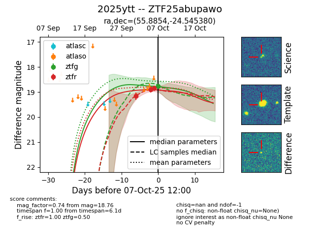
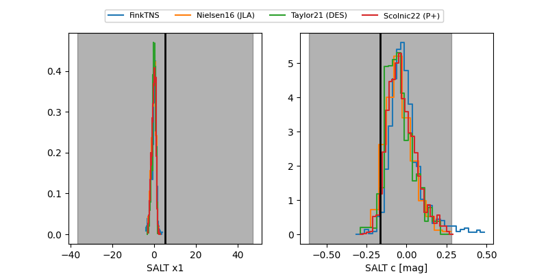

FINK: ZTF25abupawo
Lasair: ZTF25abupawo
ALeRCE: ZTF25abupawo
TNS: 2025ytt
YSE: 2025ytt
ZTF25abupawo (ztf,fink)
2025ytt (tns,yse)
equatorial (ra, dec) = (55.8854,-24.54538)
galactic (l, b) = (219.0467,-51.37503)


last ztfg=18.76, ztfr=18.85
1 ztfg, 3 ztfr detections